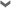

Thanks for checking out this Internet Explorer 9 Platform Preview demo. This demo uses animation techniques to display fish animating around a Fish Bowl. The faster your underlying browser and computer, the more Fish will appear on the screen.
鱼的数量
test

自动
1
5
10
25
50
100
250
500
750
1000
1250
1500
1750
2000
图层
水效果
框架
鱼缸遮罩
鱼缸背部
鱼
鱼缸前部
鱼缸光泽
鱼缸阴影
音频
标志
帧率显示
帧率指针